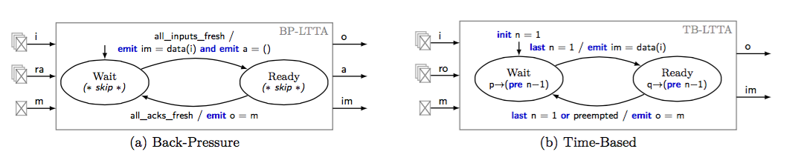

A Synchronous View of Loosely Time-Triggered Architecture
Guillaume Baudart, Albert Benveniste and Timothy Bourke
To appear at EMSOFT 2015
Loosely Time-Triggered Architectures (LTTAs) are a proposal for constructing distributed embedded control systems. They build on the quasi-periodic architecture, where computing units execute 'almost periodically', by adding a thin layer of middleware that facilitates the implementation of synchronous applications.
In this paper, we show how the deployment of a synchronous application on a quasi-periodic architecture can be modeled using a synchronous formalism. Then we detail two protocols, Back-Pressure LTTA, reminiscent of elastic circuits, Time-Based LTTA based on time. Compared to previous work, we present a less restrictive version of the Time-Based protocol that does not require broadcast communication and controller models that can be compiled for execution. We also compare the LTTA approach with architectures based on clock synchronization.
You can find here the submitted paper and the associated source code.
